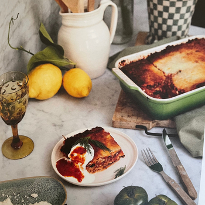

Linzen lasagna

Info
Bereidingstijd: 35 minuten
Wachttijd: 45 minuten
Aantal personen: 5
Ingrediënten
Voor de lasagna
- 175 g lasagnebladen
- 125 g geraspte kaas naar keuze zout en peper
Voor de linzen-tomatensaus:
- 2 el olijfolie
- 1 ui, gesnipperd
- 3 tenen knoflook, fijngesneden
- 1 tl gemalen komin
- 1 tl paprikapoeder
- 1 tl chilivlokken
- 1 el tomatenpuree
- 1 winterpeen, in kleine blokies
- 690 g tomatenpassata
- 2 blikken bruine linzen (à 400 g), afgespoeld en witgelekt
- 200 g spinazie
Voor de ricottavulling:
- 250 g ricotta
- 30 g parmigiano reggiano, geraspt
- 1 tl citroenrasp
- 1 el citroensap zout en peper
Voor de knoflook-tomatenboter: (optioneel)
- 50 g boter
- 1 teen knoflook, fingesneden
- 1 el tomatenpuree
- ½ tl chilivlokken
- 2 el water zout
Toppings: (optioneel)
- 200 g Griekse yoghurt
- verse dille
Bereiding
- Maak eerst de linzen-tomatensaus. Verhit de olifolie in een koekenpan en bak de ui 3 minuten, tot de vi glazig is. Voeg de knoflook en specerien toe en bak 1 minuut mee. Vog de tomatenpuree, winterpeen, tomaten-passata en linzen toe. Laat de saus 6-8 minuten sudderen en roer regel-matig door. Roer tot slot de spinazie door de saus en stoof mee tot deze geslonken is.
- Meng in een kommetje de ricotta met de parmigiano reggiano, citroen-rasp en het citroensap. Breng op smaak met zout en peper.
- Schep een laagje van de linzen-tomatensaus in de ovenschaal. Strijk glad zodat het de hele bodem bedekt. Leg hier een laage lasagnebladen op. Schep er weer een laagje saus op. Verdeel hier wat ricotta over. Leg daar weer een laage lasagnebladen op. Voeg weer een laagje saus toe, een laag-je ricotta en maak af met een laage saus. Je kunt de lasagne eventueel nog bedekken met geraspte kaas.
- Bak de lasagne 45 minuten in de oven.
- Maak de knoflook-tomatenboter wanner de lasagne bijna klaar is. Smelt de boter in een steelpan. Voeg de knoflook toe en bak 1 minuut. Vog de tomatenpuree, chilivlokken, het water en zout toe en roer goed door. Laat een paar minuten op het vuur staan, tot het bubbelt.
- Serveer eventueel met een flinke lepel Griekse yoghurt, verse dille en de knoflook-tomatenboter.
Bron
Veggilaine, pagina 142